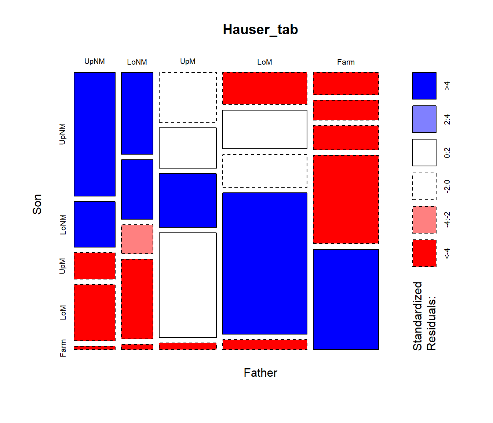
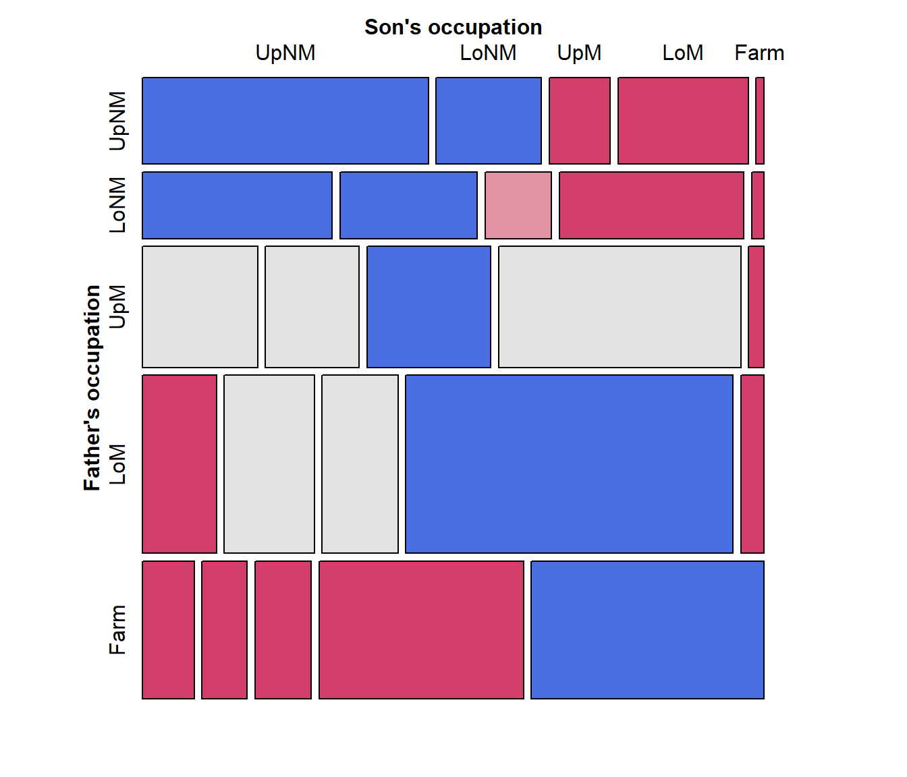
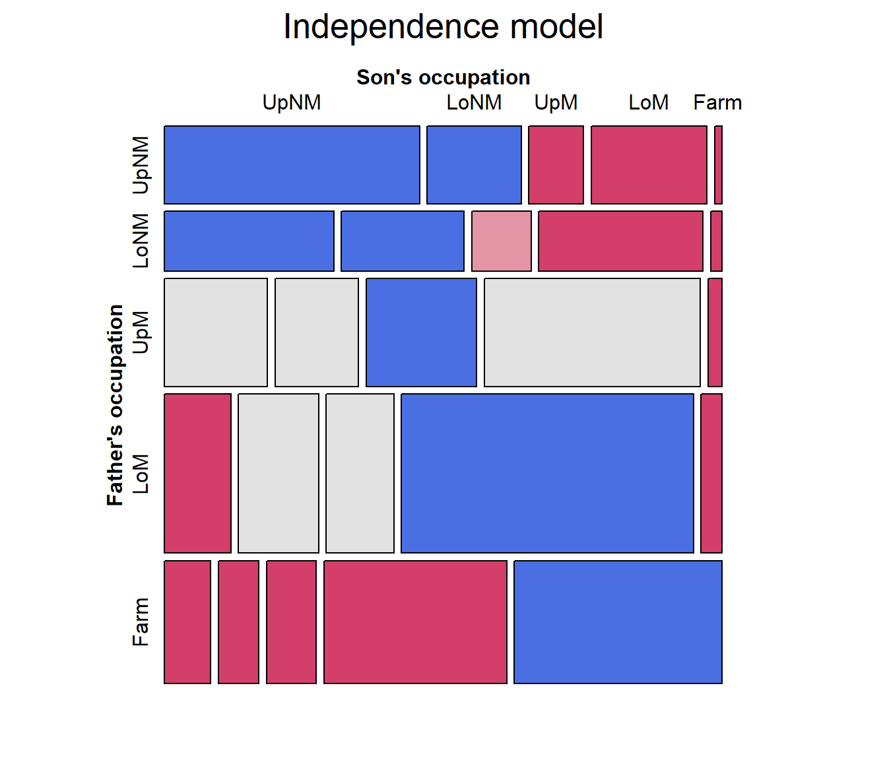
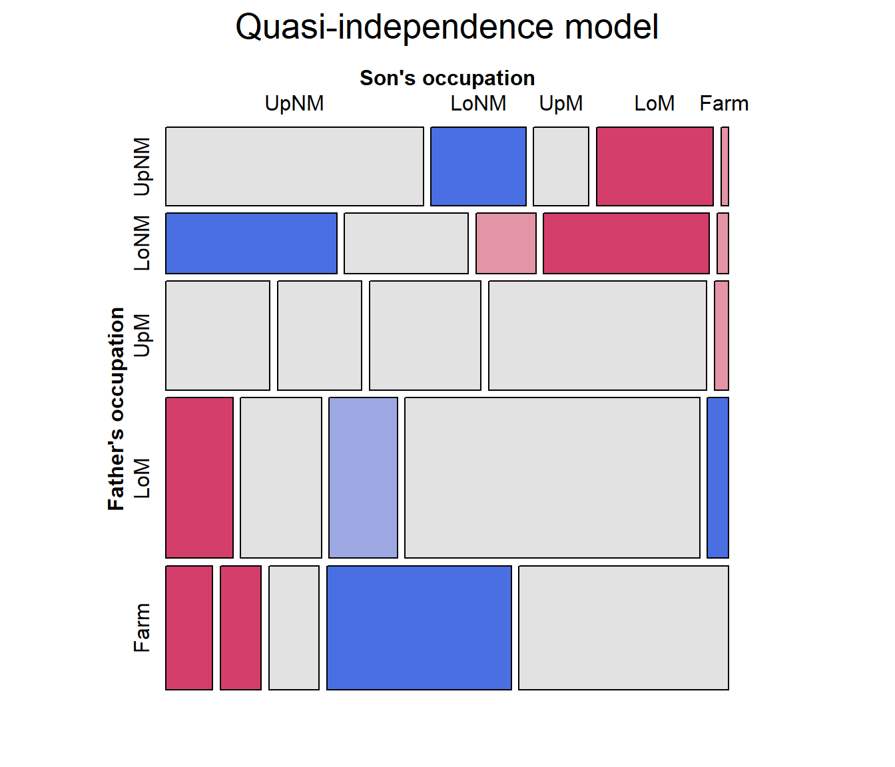
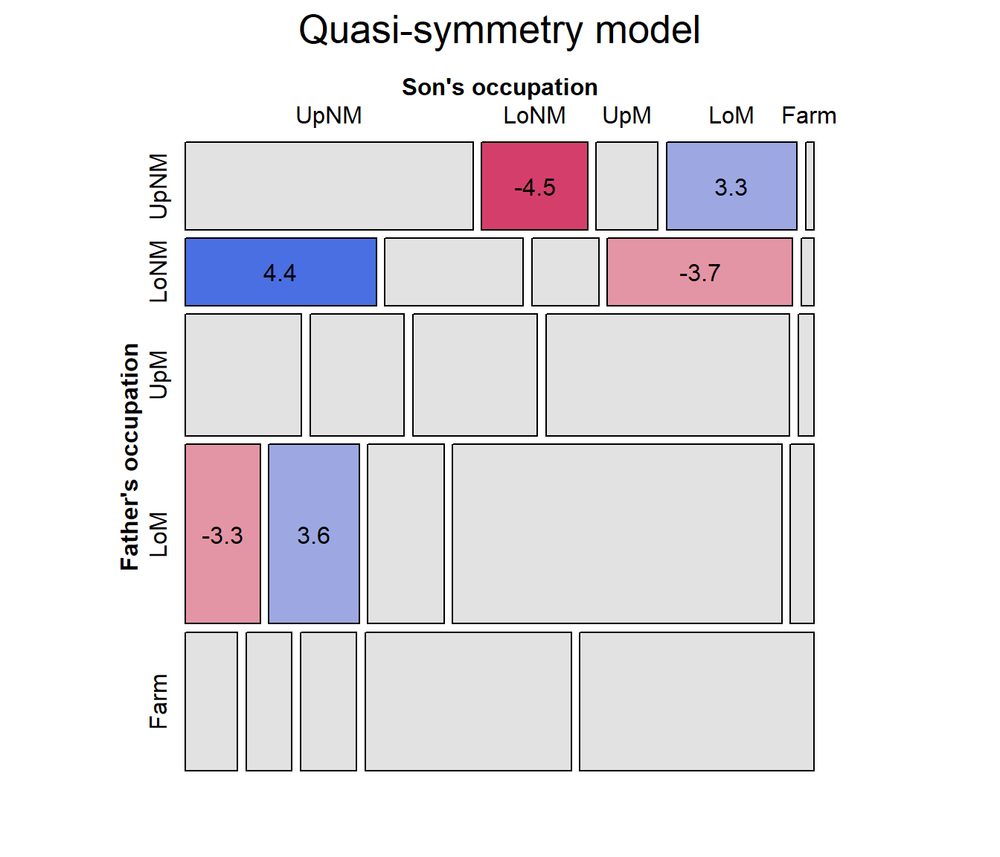
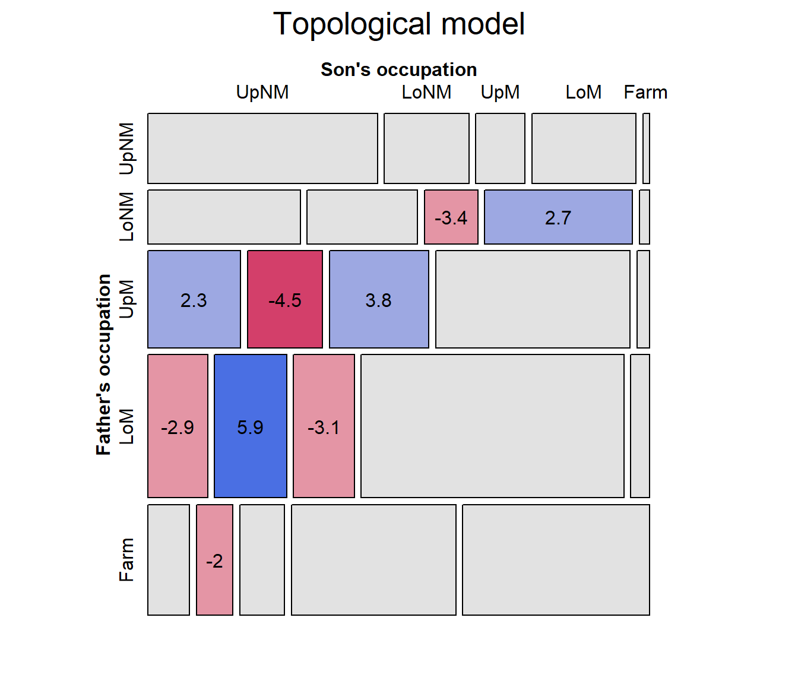

Social mobility
Social mobility is an important concept in sociology, and its’ study has led to a wide range of developments in categorical data analysis in what are often called mobility tables.
The idea is to study the movement of individuals, families, households or other categories of people within or between social strata in a society, across time or space. This refers to a change in social status relative to one’s current social location within a given society.
Using survey data, the most frequent examples relate to changes in income or wealth, but most often this is studied via classification in occupational categories (“professional,”managerial”, “skilled manual”, …). Most often this is studied intergenerationaly using the occupational categories of fathers and sons.
Mobility tables are nearly always square tables, with the same categories for the row and column variables. As such, they nearly always exhibit positive associations along the diagonal cells. What is of interest are specialized models, intermediate between the null model of independence and the saturated model.
Models
These models include important special cases:
- quasi-independence: Ignoring diagonal cells, are the row and column variables independent?
- symmetry: Are associations above the diagonal equal to the corresponding ones below the diagonal?
- row effects, col effects, linear x linear: Typically, the factors in such tables are ordinal. To what extent can the models be simplified by assigning integer scores to the row, column categories or both?
- multiplicative RC: RC models attempt to estimate the scores for the row and column categories.
- topographical models: It is possible that the associations among occupational categories exhibit consistent patterns according to their nature. These models allow specifying a theoretically interesting pattern.
- crossings models: assert that there are different difficulty parameters for crossing from category to the next and associations between categories decrease with their separation.
While standard loglinear models can be fit using
MASS::loglm, these models require use of
`stats::glm() or gnm::gnm(), as I illustrate
below.
Hauser data
This vignette uses the vcdExtra::Hauser79 dataset, a
cross-classification of 19,912 individuals by father’s occupation and
son’s first occupation for U.S. men aged 20-64 in 1973. The data comes
from Hauser (1980) and has been also
analysed by Powers & Xie (2008). The
discussion draws on Friendly & Meyer
(2016), Ch. 10.
data("Hauser79", package="vcdExtra")
str(Hauser79)
## 'data.frame': 25 obs. of 3 variables:
## $ Son : Factor w/ 5 levels "UpNM","LoNM",..: 1 2 3 4 5 1 2 3 4 5 ...
## $ Father: Factor w/ 5 levels "UpNM","LoNM",..: 1 1 1 1 1 2 2 2 2 2 ...
## $ Freq : num 1414 521 302 643 40 ...
(Hauser_tab <- xtabs(Freq ~ Father + Son, data=Hauser79))
## Son
## Father UpNM LoNM UpM LoM Farm
## UpNM 1414 521 302 643 40
## LoNM 724 524 254 703 48
## UpM 798 648 856 1676 108
## LoM 756 914 771 3325 237
## Farm 409 357 441 1611 1832As can be seen, Hauser79 is a data.frame in frequency
form. The factor levels in this table are a coarse grouping of
occupational categories, so:
UpNM= professional and kindred workers, managers and officials, and non-retail sales workers;LoNM= proprietors, clerical and kindred workers, and retail sales workers;UpM= craftsmen, foremen, and kindred workers;LoM= service workers, operatives and kindred workers, and laborers (except farm);Farm= farmers and farm managers, farm laborers, and foremen.
Mosaic plots
Hauser_tab is a table object, and the
simplest plot for the frequencies is the default plot()
method, giving a graphics::mosaicplot().
plot(Hauser_tab, shade=TRUE)
The frequencies are first split according to father’s occupational category (the first table dimension) and then by sons’ occupation. The most common category for fathers is lower manual, followed by farm.
mosaicplot(), using shade=TRUE colors the
tiles according to the sign and magnitude of the residuals from an
independence model: shades of positive
for positive residuals and negative red
for negative residuals.
vcd::mosaic() gives a similar display, but is much more
flexible in the labeling of the row and column variable, labels for the
categories, and the scheme used for shading the tiles. Here, I simply
assign longer labels for the row and column variables, using the
labeling_args argument to mosaic().
labels <- list(set_varnames = c(Father="Father's occupation",
Son="Son's occupation"))
mosaic(Freq ~ Father + Son, data=Hauser79,
labeling_args = labels,
shade=TRUE,
legend = FALSE)
Fitting and graphing models
The call to vcd::mosaic() above takes the
Hauser79 dataset as input. Internally, it fits the model of
independence and displays the result, but for more complex tables,
control of the fitted model is limited.
Unlike mosaicplot() and even the ggmosaic
package, vcdExtra::mosaic.glm() is a mosaic
method for glm objects. This means you can
fit any model, and supply the model object to mosaic().
(Note that in mosaic(), the formula argument
determines the order of splitting in the mosaic, not a loglinear
formula.)
hauser.indep <- glm(Freq ~ Father + Son,
data=Hauser79,
family=poisson)
# the same mosaic, using the fitted model
mosaic(hauser.indep, formula = ~ Father + Son,
labeling_args = labels,
legend = FALSE,
main="Independence model")
Quasi-independence
Among the most important advances from the social mobility literature is the idea that associations between row and column variables in square tables can be explored in greater depth if we ignore the obvious association in the diagonal cells. The result is a model of quasi-independence, asserting that fathers’ and sons’ occupations are independent, ignoring the diagonal cells.
For a two-way table, quasi-independence can be expressed as or in loglinear form as: This model effectively adds one parameter, , for each main diagonal cell and fits those frequencies perfectly.
In the gnm
package, gnm::Diag() creates the appropriate term in the
model formula, using a symbol in the diagonal cells and “.”
otherwise.
# with symbols
with(Hauser79, Diag(Father, Son)) |> matrix(nrow=5)
## [,1] [,2] [,3] [,4] [,5]
## [1,] "UpNM" "." "." "." "."
## [2,] "." "LoNM" "." "." "."
## [3,] "." "." "UpM" "." "."
## [4,] "." "." "." "LoM" "."
## [5,] "." "." "." "." "Farm"We proceed to fit and plot the quasi-independence model by updating
the independence model, adding the term
Diag(Father, Son).
hauser.quasi <- update(hauser.indep,
~ . + Diag(Father, Son))
mosaic(hauser.quasi, ~ Father+Son,
labeling_args = labels,
legend = FALSE,
main="Quasi-independence model")
Note that the pattern of residuals shows a systematic pattern of positive and negative residuals above and below the diagonal tiles. We turn to this next.
Symmetry and quasi-symmetry
Another advance from the social mobility literature was the idea of how to test for differences in occupational categories between fathers and sons. The null hypothesis of no systematic differences can be formulated as a test of symmetry in the table, which asserts that sons are as likely to move from their father’s occupation to another category as they were to move in the reverse direction, to . An alternative, “Upward mobility”, i.e., that sons who did not stay in their father’s occupational category moved to a higher category on average would mean that Yet this model is overly strong, because it also asserts marginal homogeneity, that the marginal probabilities of row and column values are equal, for all . Consequently, this hypothesis is most often tested as a model for quasi-symmetry, that also ignores the diagonal cells.
Symmetry is modeled by the function gnm::Symm(). It
returns a factor with the same labels for positions above and below the
diagonal.
with(Hauser79, Symm(Father, Son)) |> matrix(nrow=5)
## [,1] [,2] [,3] [,4] [,5]
## [1,] "UpNM:UpNM" "UpNM:LoNM" "UpNM:UpM" "UpNM:LoM" "UpNM:Farm"
## [2,] "UpNM:LoNM" "LoNM:LoNM" "LoNM:UpM" "LoNM:LoM" "LoNM:Farm"
## [3,] "UpNM:UpM" "LoNM:UpM" "UpM:UpM" "UpM:LoM" "UpM:Farm"
## [4,] "UpNM:LoM" "LoNM:LoM" "UpM:LoM" "LoM:LoM" "LoM:Farm"
## [5,] "UpNM:Farm" "LoNM:Farm" "UpM:Farm" "LoM:Farm" "Farm:Farm"To fit the model of quasi-symmetry, add both Diag() and
Symm() to the model of independence.
To compare the models so far, we can use anova() or
`vcdExtra::LRstats():
anova(hauser.indep, hauser.quasi, hauser.qsymm, test="Chisq")
## Analysis of Deviance Table
##
## Model 1: Freq ~ Father + Son
## Model 2: Freq ~ Father + Son + Diag(Father, Son)
## Model 3: Freq ~ Father + Son + Diag(Father, Son) + Symm(Father, Son)
## Resid. Df Resid. Dev Df Deviance Pr(>Chi)
## 1 16 6170.1
## 2 11 683.3 5 5486.8 < 2.2e-16 ***
## 3 6 27.4 5 655.9 < 2.2e-16 ***
## ---
## Signif. codes: 0 '***' 0.001 '**' 0.01 '*' 0.05 '.' 0.1 ' ' 1
LRstats(hauser.indep, hauser.quasi, hauser.qsymm)
## Likelihood summary table:
## AIC BIC LR Chisq Df Pr(>Chisq)
## hauser.indep 6390.8 6401.8 6170.1 16 < 2.2e-16 ***
## hauser.quasi 914.1 931.1 683.3 11 < 2.2e-16 ***
## hauser.qsymm 268.2 291.3 27.4 6 0.0001193 ***
## ---
## Signif. codes: 0 '***' 0.001 '**' 0.01 '*' 0.05 '.' 0.1 ' ' 1This hauser.qsymm model represents a huge improvement in
goodness of fit. With such a large sample size, it might be considered
an acceptable fit.
But, this model of quasi-symmetry still shows some residual lack of fit. To visualize this in the mosaic, we can label the cells with their standardized residuals.
mosaic(hauser.qsymm, ~ Father+Son,
labeling_args = labels,
labeling = labeling_residuals,
residuals_type ="rstandard",
legend = FALSE,
main="Quasi-symmetry model")
The cells with the largest lack of symmetry (using standardized residuals) are those for the upper and lower non-manual occupations, where the son of an upper manual worker is less likely to move to lower non-manual work than the reverse.
Topological models
It is also possible that there are more subtle patterns of
association one might want to model, with specific parameters for
particular combinations of the occupational categories (beyond the idea
of symmetry). Hauser (1980) developed this
idea in what are now called topological models or
levels models, where an arbitrary pattern of
associations can be specified, implemented in
gnm::Topo().
# Levels for Hauser 5-level model
levels <- matrix(c(
2, 4, 5, 5, 5,
3, 4, 5, 5, 5,
5, 5, 5, 5, 5,
5, 5, 5, 4, 4,
5, 5, 5, 4, 1),
nrow = 5, ncol = 5,
byrow=TRUE)
hauser.topo <- update(hauser.indep,
~ . + Topo(Father, Son, spec=levels))
mosaic(hauser.topo, ~Father+Son,
labeling_args = labels,
labeling = labeling_residuals,
residuals_type ="rstandard",
legend = FALSE,
main="Topological model")
Comparing models, we can see that the model of quasi-symmetry is the best so far, using AIC as the measure:
LRstats(hauser.indep, hauser.quasi, hauser.qsymm, hauser.topo, sortby = "AIC")
## Likelihood summary table:
## AIC BIC LR Chisq Df Pr(>Chisq)
## hauser.indep 6390.8 6401.8 6170.1 16 < 2.2e-16 ***
## hauser.quasi 914.1 931.1 683.3 11 < 2.2e-16 ***
## hauser.topo 295.3 311.1 66.6 12 1.397e-09 ***
## hauser.qsymm 268.2 291.3 27.4 6 0.0001193 ***
## ---
## Signif. codes: 0 '***' 0.001 '**' 0.01 '*' 0.05 '.' 0.1 ' ' 1Ordinal tables
Because the factors in mobility tables are ordered, another path to simplifying the saturated model is to consider assigning numerical scores (typically consecutive integers) to the categories.
When both variables are assigned scores, this gives the linear-by-linear model, where and are the row and column numeric scores. This model is also called the model of uniform association (Goodman, 1979) because, for integer scores, , , this model has only one extra parameter, , which is the common odds local ratio. The independence model is the special case, . In contrast, the saturated model, allowing general association , uses additional parameters.
For square tables, like mobility tables, this model can be amended to
include a diagonal term, Diag()
Sscore <- as.numeric(Hauser79$Son)
Fscore <- as.numeric(Hauser79$Father)
Hauser79 |> cbind(Fscore, Fscore) |> head()
## Son Father Freq Fscore Fscore
## 1 UpNM UpNM 1414 1 1
## 2 LoNM UpNM 521 1 1
## 3 UpM UpNM 302 1 1
## 4 LoM UpNM 643 1 1
## 5 Farm UpNM 40 1 1
## 6 UpNM LoNM 724 2 2To fit this model, I use Fscore * Sscore for the linear
x linear association and add Diag(Father, Son) to fit the
diagonal cells exactly.
hauser.UAdiag <- update(hauser.indep,
. ~ . + Fscore : Sscore + Diag(Father, Son))
LRstats(hauser.UAdiag)
## Likelihood summary table:
## AIC BIC LR Chisq Df Pr(>Chisq)
## hauser.UAdiag 305.72 324 73.007 10 1.161e-11 ***
## ---
## Signif. codes: 0 '***' 0.001 '**' 0.01 '*' 0.05 '.' 0.1 ' ' 1In this model, the estimated common local log odds ratio—the
coefficient
for the linear-by-linear term Fscore:Sscore, is given
by:
coef(hauser.UAdiag)[["Fscore:Sscore"]]
## [1] 0.1584003For comparisons not involving the diagonal cells, each step down the scale of occupational categories for the father multiplies the odds that the son will also be in one lower category by , an increase of 17%.
But this model does not seem to be any improvement over quasi-symmetry. From the pattern of residuals in the mosaic, we see a number of large residuals of various signs in the lower triangular, where the son’s occupation is of a higher level than that of the father.
mosaic(hauser.UAdiag, ~ Father+Son,
labeling_args = labels,
labeling = labeling_residuals,
residuals_type ="rstandard",
legend = FALSE,
main="Uniform association + Diag()")
Model comparison plots
Finally, for comparing a largish collection of models, a model comparison plot can show the trade-off between goodness-of-fit and parsimony by plotting measures like , AIC, or BIC against degrees of freedom. The plot below, including quite a few more models, uses a log scale for BIC to emphasize differences among better fitting models. (The code for this plot is shown on p. 399 of Friendly & Meyer (2016)).